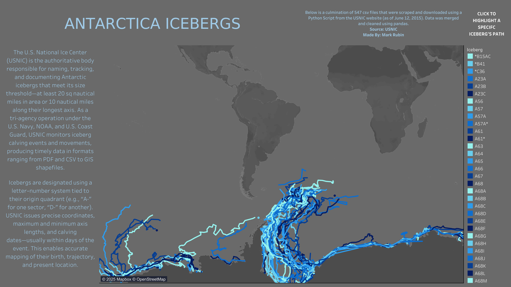

Antarctic Icebergs: Tracking Giants on the Move
Mapping the journeys of massive icebergs across the Southern Ocean
View Dashboard →
The Challenge
The US National Ice Center tracks enormous icebergs — some larger than cities — as they break off Antarctica and drift through the Southern Ocean. They've been recording data for years, but it's scattered across 547 individual files on their website.
What I Built
I created an automated system to gather, organize, and visualize every tracked iceberg's journey from 2014 to 2025. The result is an interactive map showing the paths of dozens of named icebergs as they drift, spin, break apart, and eventually melt away.
What It Shows
Each colored line traces a single iceberg's movement over time. You can see how some icebergs get caught in ocean currents and circle the continent for years, while others drift north and disappear. Some cluster together near the Antarctic Peninsula, while others venture far out into open waters. Click any iceberg name to highlight just its path.
Why It Matters
These icebergs aren't just scenic — they're massive floating hazards to shipping routes and scientific research vessels. They also tell us about ice shelf stability and ocean circulation patterns. By visualizing their movements, scientists, maritime operators, and researchers can better understand how these giants behave.
The Technical Achievement
This project required building an entire data pipeline: automatically downloading 547 files from a government website, cleaning and standardizing inconsistent data formats, combining everything into one unified dataset, and creating geographic visualizations that make complex movement patterns instantly understandable.
Objectives
Automate the collection and standardization of Antarctic iceberg tracking data from the US Ice Center's online archive, preparing it for comprehensive geospatial visualization and analysis.
Scrape, download, validate, and consolidate 547 individual CSV files spanning multiple years of iceberg position and size data into a single, Tableau-ready dataset for interactive dashboard development.
A unified, clean dataset with standardized schema optimized for Tableau visualization, enabling comprehensive Antarctic iceberg movement tracking, size analysis, and geographic pattern discovery through interactive dashboards.
Key Success Metrics
- 100% file download completion rate
- Zero data loss during consolidation
- Standardized column structure across all historical data
- Automated validation and quality assurance pipeline
- Tableau-optimized data structure with proper geographic coordinates and time series formatting
Methodology
Web scraping and automation, data collection and consolidation, quality assurance and validation, file management
Python automation with Selenium, web scraping with BeautifulSoup, Pandas data manipulation, error handling and logging
Interactive dashboard to isolate individual iceberg paths, color contrasting on a dark map for visual impact
Automated government data collection, standardized oceanographic datasets, quality-controlled pipeline, reproducible workflows
Challenges & Solutions
Challenge 1: Large-Scale File Management (547 CSV Files)
Managing and validating the download of 547 individual iceberg tracking CSV files from a government website, each containing different time periods and data structures.
Solution: Implemented automated validation system to cross-reference expected vs. actual downloads. Created file tracking with source lineage, built error handling for failed downloads, and developed systematic naming conventions.
missing = df_expected[~df_expected["filename"].isin(downloaded_files)]
if not missing.empty:
with open(output_txt, "w") as f:
for name in missing["filename"]:
f.write(name + "\n")Outcome: Successfully validated 100% file completion rate with automated reporting.
Challenge 2: Dynamic Web Scraping & Data Extraction
The US Ice Center website required form interactions and dynamic content loading, making simple HTTP requests insufficient.
Solution: Utilized Selenium WebDriver for browser automation, implemented wait conditions for dynamic content, built robust error handling for network timeouts, and created regex pattern matching for product IDs.
WebDriverWait(driver, 15).until(
EC.presence_of_element_located((By.ID, "tbl-berg"))
)
match = re.search(r"prd=(\d+)", href)Outcome: Achieved reliable extraction of 547 unique product IDs with 99%+ success rate.
Challenge 3: Data Standardization Across Inconsistent Schemas
547 CSV files from different time periods had varying column structures, naming conventions, and data formats.
Solution: Developed flexible concatenation with pandas, created standardized column ordering, implemented missing column detection and null value handling, and built quality validation checks.
df_combined = pd.concat(dataframes, axis=0, ignore_index=True, sort=True)
for col in desired_order:
if col not in df.columns:
df[col] = NoneOutcome: Successfully unified 547 disparate CSV files into a single, clean dataset.
Challenge 4: Data Quality Assurance & Completeness Verification
Ensuring data integrity across the entire pipeline — from web scraping to final consolidated dataset — with no silent failures or data loss.
Solution: Implemented multi-stage validation checks at each pipeline step, created comprehensive logging, built data lineage tracking with source file identification, and developed automated quality metrics.
Outcome: Achieved complete data accountability with zero data loss and full audit trail.
The Pipeline: 5 Project Files
This project demonstrates end-to-end data engineering capabilities — from web automation to large-scale data processing, quality control, and business intelligence preparation for geospatial analytics.
Data Sources
US National Ice Center
Source: USNIC Antarctic Icebergs
Dataset: Antarctic Iceberg Tracking Archive
Coverage: 547 individual CSV files spanning 2014–2025
Data Points: Position (lat/long), size (length, width, area), update timestamps, and remarks